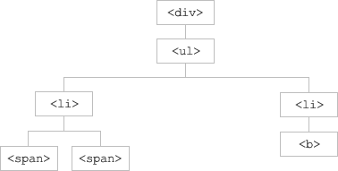

jQuery 遍历
什么是遍历？
jQuery 遍历，意为“移动”，用于根据其相对于其他元素的关系来“查找”（或选取）HTML 元素。以某项选择开始，并沿着这个选择移动，直到抵达您期望的元素为止。
下图展示了一个家族树。通过 jQuery 遍历，您能够从被选（当前的）元素开始，轻松地在家族树中向上移动（祖先），向下移动（子孙），水平移动（同胞）。这种移动被称为对 DOM 进行遍历。
图示解释：
- <div> 元素是 <ul> 的父元素，同时是其中所有内容的祖先。
- <ul> 元素是 <li> 元素的父元素，同时是 <div> 的子元素
- 左边的 <li> 元素是 <span> 的父元素，<ul> 的子元素，同时是 <div> 的后代。
- <span> 元素是 <li> 的子元素，同时是 <ul> 和 <div> 的后代。
- 两个 <li> 元素是同胞（拥有相同的父元素）。
- 右边的 <li> 元素是 <b> 的父元素，<ul> 的子元素，同时是 <div> 的后代。
- <b> 元素是右边的 <li> 的子元素，同时是 <ul> 和 <div> 的后代。
提示：祖先是父、祖父、曾祖父等等。后代是子、孙、曾孙等等。同胞拥有相同的父。
遍历 DOM
jQuery 提供了多种遍历 DOM 的方法。
遍历方法中最大的种类是树遍历（tree-traversal）。
下一章会讲解如何在 DOM 树中向上、下以及同级移动。
jQuery 遍历参考手册
如需了解所有的 jQuery 遍历方法，请访问我们的 jQuery 遍历参考手册。